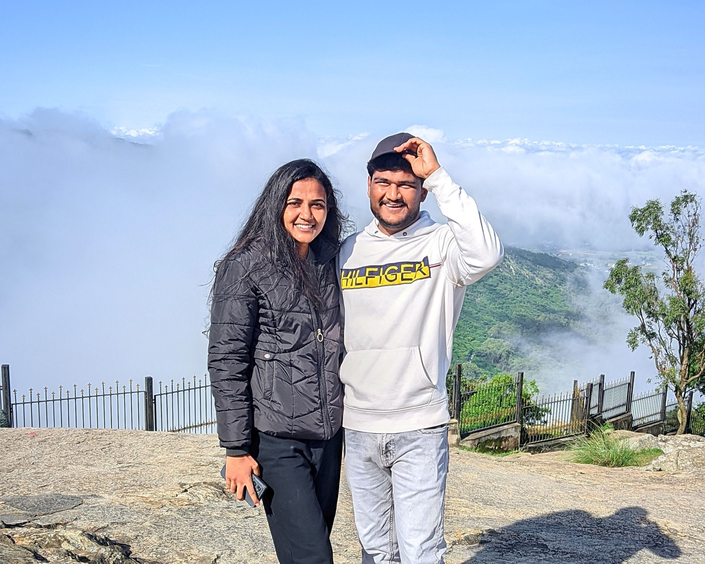
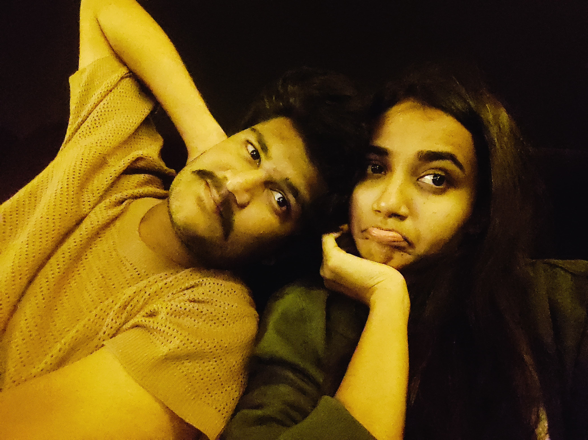
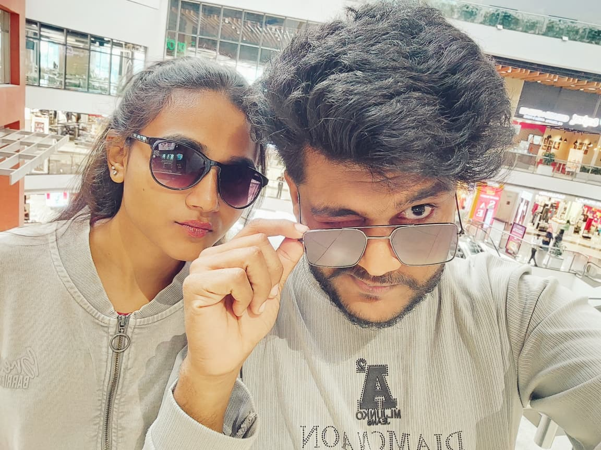
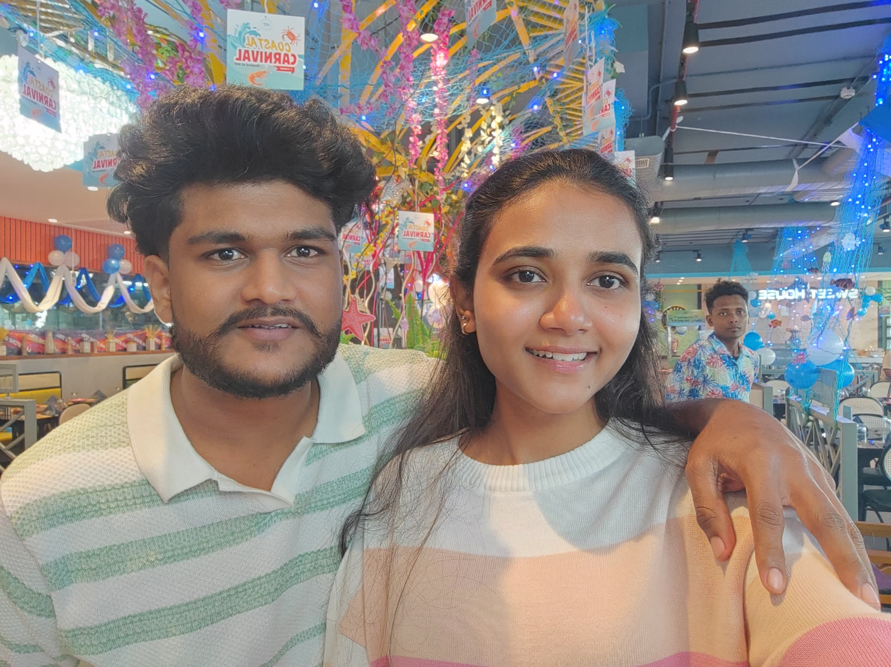

The Long Road to 'Us'
We proposed in college, full of dreams and nervous excitement. Since that day in April, the road hasn't been easy. We are fighting for our long-term goal—to marry each other—against every odd stacked against us.
But every struggle is worth it because the prize is you.

Adventures
"I don’t even remember how many trips and little adventures we went on — I just remember how happy I was with you."

College Days
"Life gave me many days, but the ones spent with you in college became the best chapters of my story."

Our Laughter
"I still think about the laughter we shared in that classroom… but more than anything, I remember how beautiful your smile was."

Movies
"There were a lot of movies we watched together, The screens were full of stories, yet the only one I ever watched was your face beside me."

Lucky me
"The malls were filled with beautiful things, but none of them ever matched the beauty walking beside me.."

Highs and lows
"Life took us on many rides — some high, some low — but your presence was the one thing that never changed."

Small moments
"It’s the little moments with you that matter the most to me — I want to smile beside you for an eternity."
Promise
"Some bonds are meant to last forever… ours is one of them. Let’s promise we never let go."